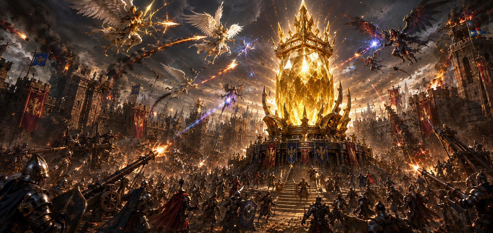
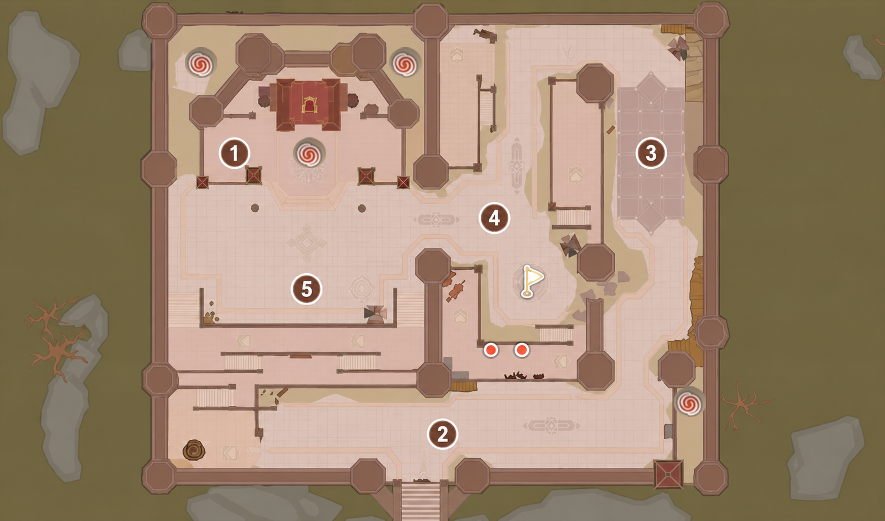
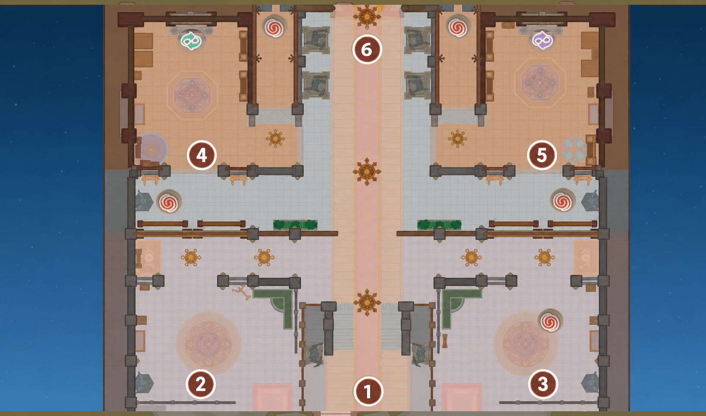
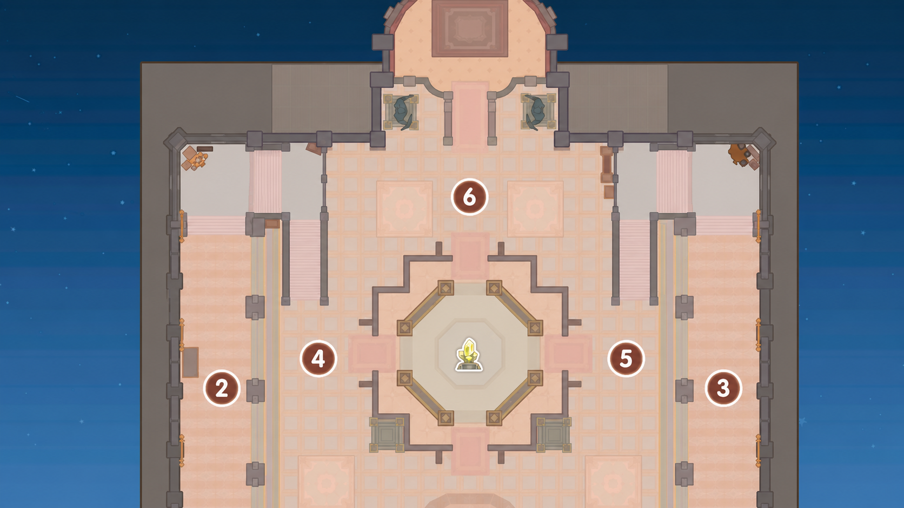

Check gear and supplies
Confirm consumables, cards, resistance gear, voice comms, and party placement before assembly.

SIEGE
Use this page for siege timing, assignments, defense groups, push groups, and final reminders before the call starts.
Confirm consumables, cards, resistance gear, voice comms, and party placement before assembly.
Push only when called, defend choke points, and avoid splitting from your assigned group.
Post notes, screenshots, MVPs, and issues so the next siege gets cleaner.
FIND MY PARTY
Search your character name to confirm your league, team, party number, team leader, party leader, and party members.
SIEGE WAR STRATEGY
Use these calls when the guild needs to break a stacked defense or protect our own choke points.
SIEGE ROUTE
Use this guide when the commander calls for palace entry. Watch the video to see the live route and timing.
Use this Siege route video as the movement reference during war calls.
Open videoFollow these three maps when the commander calls for the secret passage route. Stay grouped, move fast, and use the portals in order.

Secret PassageOn Siege Map 1, use the red portal on the upper-left side. This portal leads into the secret passage.

Green PortalInside the secret passage area, turn back toward the green portal and enter it. This will teleport you into the main hall route.

EmperiumOn Siege Map 3, move toward the middle of the room and focus the Emperium. Clear defenders only when they block the push.